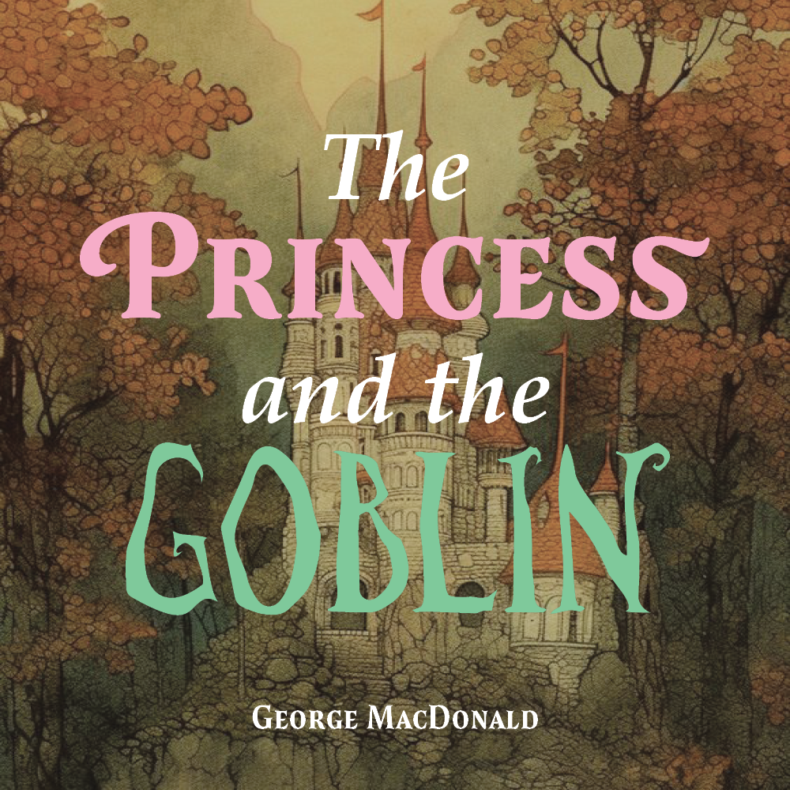

The Princess and the Goblin by George MacDonald.
Published in 1872, The Princess and the Goblin is one of the first books in the modern fantasy genre. The Princess and the Goblin tells the story of young Princess Irene and her friend Curdie, who must outwit the threatening goblins who live in caves beneath her mountain home.

Simon Fraser University respectfully acknowledges the xʷməθkʷəy̓əm (Musqueam), Sḵwx̱wú7mesh Úxwumixw (Squamish), səl̓ilw̓ətaʔɬ (Tsleil-Waututh), q̓íc̓əy̓ (Katzie), kʷikʷəƛ̓əm (Kwikwetlem), Qayqayt, Kwantlen, Semiahmoo and Tsawwassen peoples on whose unceded traditional territories our three campuses reside.